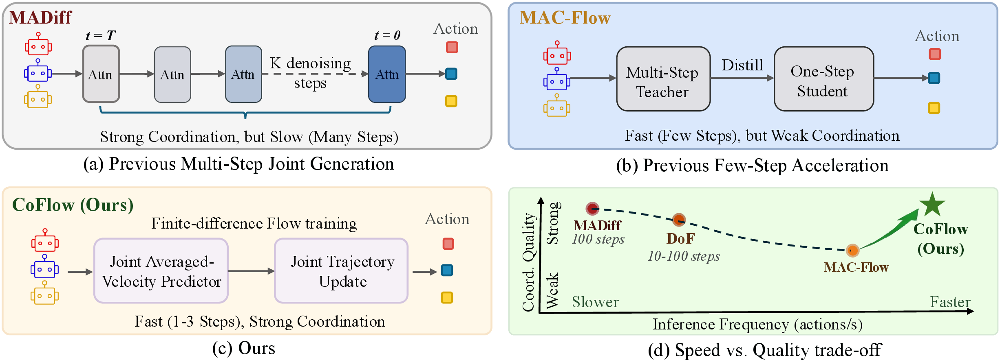

Tag · Expert
Coordinated pressure around the prey.
Coordinated pressure around the prey.
Structured movement through food and forests.
Coordinated micro overcomes the extra enemy.
Coordinated legs sustain locomotion.

@misc{zou2026coflowcoordinatedfewstepflow,
title={CoFlow: Coordinated Few-Step Flow for Offline Multi-Agent Decision Making},
author={Guowei Zou and Haitao Wang and Beiwen Zhang and Boning Zhang and Hejun Wu},
year={2026},
eprint={2605.01457},
archivePrefix={arXiv},
primaryClass={cs.AI},
url={https://arxiv.org/abs/2605.01457},
}